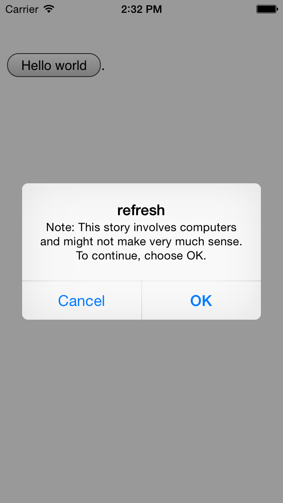
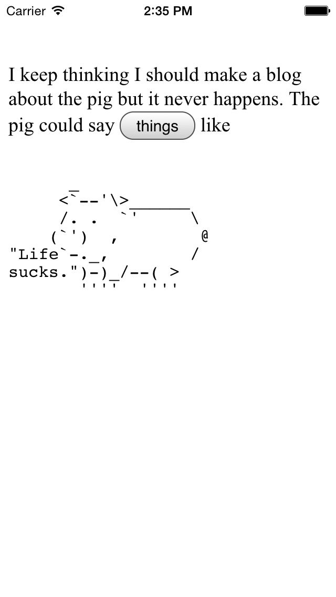
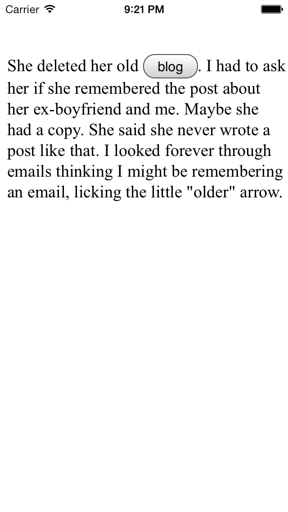
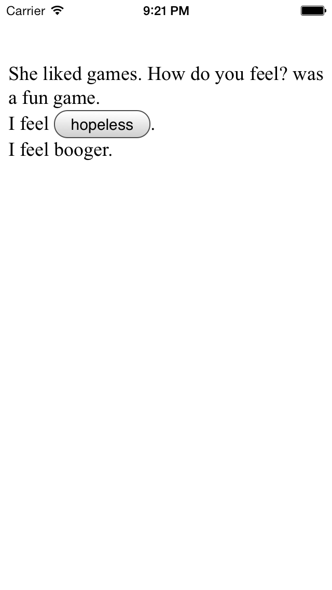

---
layout: default
---	
<div class="row" id="page">
	<div class="columns medium-12">

		<p>Refresh is an art app for <span style="text-decoration:line-through;">iPhone</span> and <a href="https://play.google.com/store/apps/details?id=com.owenribbit.refresh" target="_blank">Android</a>&nbsp;(in the app store its called Refresh by Owen Ribbit because Refresh has&nbsp;already taken by an unpublished app). &nbsp;This started as an Internet based project that was <a href="http://mobydonut.wordpress.com/refresh-app/" target="blank">in reaction</a> to some research I was doing on net art. &nbsp;It tells a story in a sort of maze, with buttons connecting pages in a narrative, while each page will time out at a certain point and Refresh the app back to the beginning, modeling video games that send the character to the beginning of a level each time they “die”. &nbsp;Through repeated readings of these pages the viewer pieces together the narrative and learns the various pathways from beginning to end.</p>

		<p>In February 2017, Refresh was removed from the Apple store, for not being "useful", <a href="/2017/05/10/refresh-gone.html">as detailed here</a>.  For the time being, it is available for free <a href="/refresh/" target="blank">online</a>.</p>
	
		
		
		
		

		<p><a href="/work.html">back to work</a></p>
	</div>
</div>
